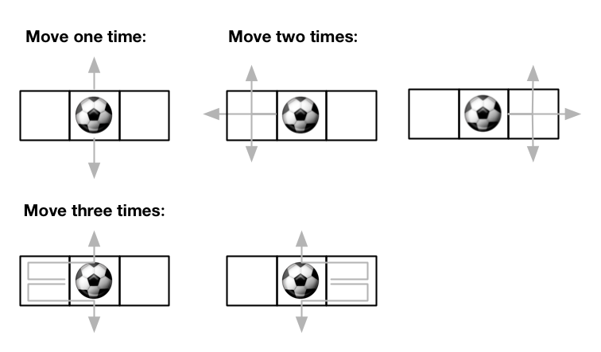

Out of Boundary Paths
There is an m x n grid with a ball. The ball is initially at the position [startRow, startColumn]. You are allowed to move the ball to one of the four adjacent cells in the grid (possibly out of the grid crossing the grid boundary). You can apply at most maxMove moves to the ball.
Given the five integers m, n, maxMove, startRow, startColumn, return the number of paths to move the ball out of the grid boundary. Since the answer can be very large, return it modulo 109 + 7.
Example 1:

Input: m = 2, n = 2, maxMove = 2, startRow = 0, startColumn = 0
Output: 6Example 2:
Input: m = 1, n = 3, maxMove = 3, startRow = 0, startColumn = 1
Output: 12Constraints:
- 1 <= m, n <= 50
- 0 <= maxMove <= 50
- 0 <= startRow < m
- 0 <= startColumn < n
Hint #1
Is traversing every path feasible? There are many possible paths for a small matrix. Try to optimize it.
Hint #2
Can we use some space to store the number of paths and update them after every move?
Hint #3
One obvious thing: the ball will go out of the boundary only by crossing it. Also, there is only one possible way the ball can go out of the boundary from the boundary cell except for corner cells. From the corner cell, the ball can go out in two different ways. Can you use this thing to solve the problem?